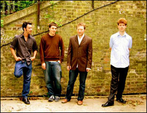

The Luke Barlow Band
The Luke Barlow band brings together four of London’s most talented young jazz musicians. With influences ranging between Bach, Bailey, Stravinsky, Zorn, Goldie, Monk and Melt Banana, Luke’s compositions lure the listener with catchy melodies before deftly leading them through experiments with jazz compositional structure, unsuspectingly transiting from detailed composition into free improvisation, and exposing them to dense counterpoint, swift groove changes, energetic instrumental workouts, and expansive group improvisation along the way. The band has recently released their debut album, which can be bought at the record company’s website www.copepod.co.uk. The members of the Luke Barlow Band are all strong distinctive players, and all bandleaders in their own right.
Luke Barlow (piano, composition) has been playing piano and saxophone in jazz and rock bands since he was a teenager. From 1997 until 2001, he played keyboards in the rock band Camp Blackfoot. He is now a member of the highly acclaimed Nøught (championed by the late John Peel) and also plays in many other groups, as well as leading The Luke Barlow Band. He has studied at the Guildhall School of Music and Drama, and has a number of ‘classical’ compositions to his name, most of them fiendishly difficult. He also plays frequently around Europe with the dance group the Sign Dance Collective, recently appearing at Festival Lent in Maribor, Slovenia, and live in Trafalgar Square in a stripped down alto and drums duo.
Alex Ward (clarinet) was born in 1974 and has been playing improvised music in public since 1986, mainly as a clarinettist but also on alto sax, piano and (with increasing frequency) guitar. Over this time he has worked with Derek Bailey, Eugene Chadbourne, Simon Fell, Steve Noble, Pat Thomas, Steve Beresford, Ingar Zach and Butch Morris, amongst many others. He has also played in a number of rock bands, notably Camp Blackfoot and John Bisset’s Pocket. As well as leading his own improvising group, feauting Luke and the world class rhythm section of Simon Fell and Steve Noble, his current projects include a recently released album of songs, ‘Hapless Days’, and performances in this vein both solo and with his band The Dead Ends.
Santiago Horro (double bass) was brought up on a diet of AC/DC and Motorhead before turning to blues, then jazz such as Ornette Coleman and Cecil Taylor and back to likes of the Chilli Peppers and the Minutemen. Now, as a performer of all these types of music, and equally comfortable on electric and upright bass, Sant plays extensively around London with a number of bands. He plays in Nøught, and leads his own vocal funk / rock /soul band Los Huevones.
Mark Holub (drums) brings enormous vitality to the band with his energetic and inventive drumming. Mark is currently making waves on the jazz scene with his own highly acclaimed band, Led Bib. Mark started drumming in New York and brings much of that downtown flavour to London. He has recently graduated from Middlesex University in the jazz MA course.